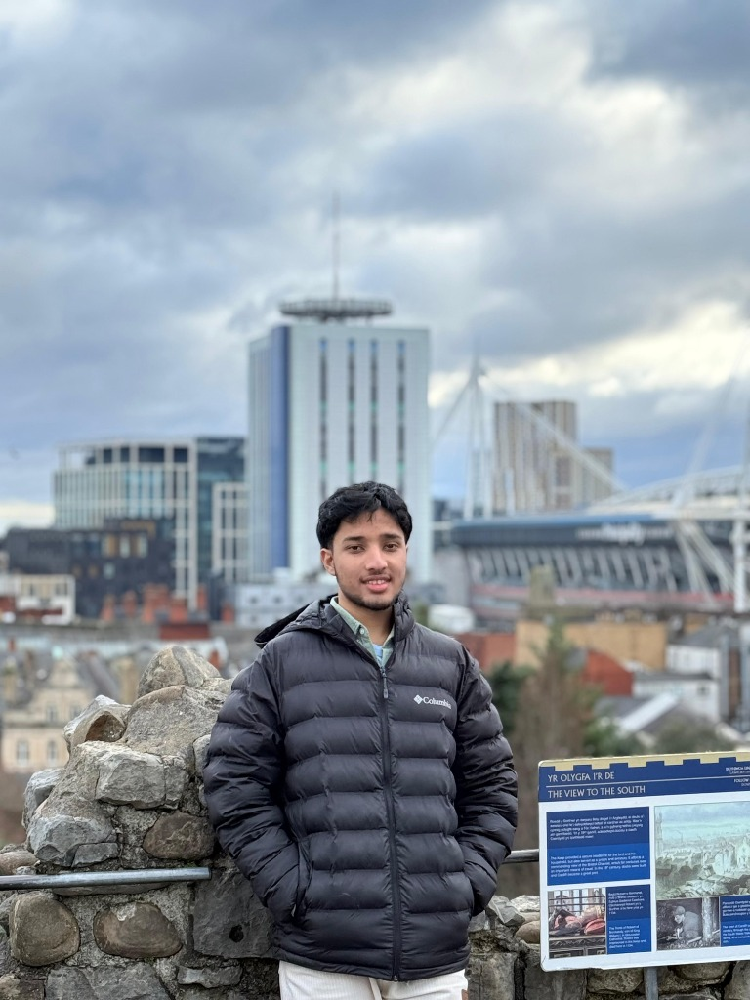

Current studies
B.Sc. Artificial Intelligence
University of Hertfordshire · United Kingdom
Year of study: awaiting confirmation.
Technology · Creativity · Community
Artificial Intelligence student.
Creative storyteller. Community leader.
I study B.Sc. Artificial Intelligence at the University of Hertfordshire. My background brings together software engineering studies, visual storytelling and humanitarian volunteering — with people at the heart of my work.
Cambridge, United Kingdom

01 / Education
Current studies
University of Hertfordshire · United Kingdom
Year of study: awaiting confirmation.
Previous studies
Metropolitan University · Bangladesh
Programme not completed.
02 / Experience
Customer service
Amigo, Addenbrookes Hospital · Cambridge
Customer assistance, inventory maintenance and store organisation.
Humanitarian service
Bangladesh Red Crescent Society
Humanitarian and disaster response activities, first aid training, search and rescue, and community engagement.
Community leadership
Angina · Charitable organisation
Led a charitable initiative, community projects and fundraising activities.
Creative media
MNEX
Video and photo content, event coverage, advertising and visual storytelling.
Student engagement
SWE Innovators Forum
Communication, press activities and event publicity.
03 / Capabilities
04 / Training
Further qualification details are available on request.
Let’s connect